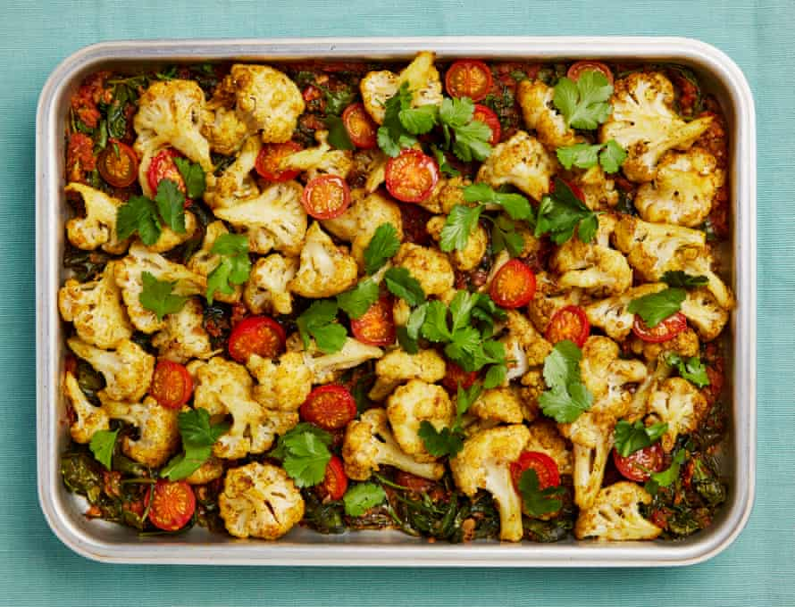

Baked cauliflower with spices, spinach and tomato

This would go really well with rice or some other grain. If you don’t mind it not being dairy-free, serve with Greek yoghurt or even creme fraiche.
Heat the oven to 180C/350F/gas 4. Coarsely grate the tomatoes on a box grater, discarding the skin: you should end up with about 600g grated tomato.
Mix all the spices in a small bowl, then add a third of this mixture to a large bowl. Add the cauliflower, two tablespoons of oil and a half-teaspoon of salt to the large bowl, then toss to coat.
Put the ginger, garlic and a quarter-teaspoon of salt in a mortar and crush to a rough paste.
Heat two tablespoons of oil in a frying pan on a medium flame and, once hot, fry the onion until soft and browned – about seven minutes. Add the ginger and garlic paste, green chilli and mustard seeds, stir-fry for a minute more, then stir in the tomato paste and remaining spice mixture, and cook for another 30 seconds. Add the grated tomato and a teaspoon of salt, leave to simmer for five minutes, then stir in the coriander and spinach, and cook for another three minutes, until the sauce has reduced a little.
Transfer the sauce to a 20cm x 30cm baking dish and top with the cauliflower mix and cherry tomato halves. Cover tightly with foil, bake for 40 minutes, then remove the foil, drizzle with a tablespoon of oil and bake uncovered for 10 minutes more. Remove from the oven, drizzle with the remaining tablespoon of oil, top with a little coriander and serve.